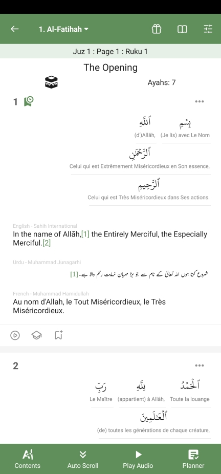
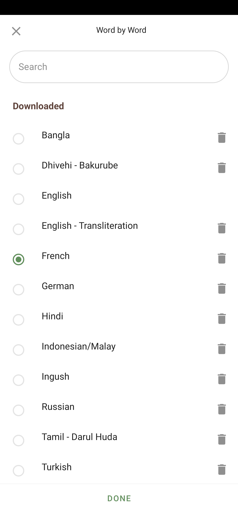

I've noticed that there were no word-by-word translations of The Quʼān. So in January 2023 I started making one and finally completed it in January 2024, wa-l-Ḥamdu Lillāh.
You can get it on the Quʼān app by GreenTech Apps Foundation available on iphone and android:
You just have to choose "French" in the word-by-word translation settings:
You can also get the files on github by clicking here: click here.